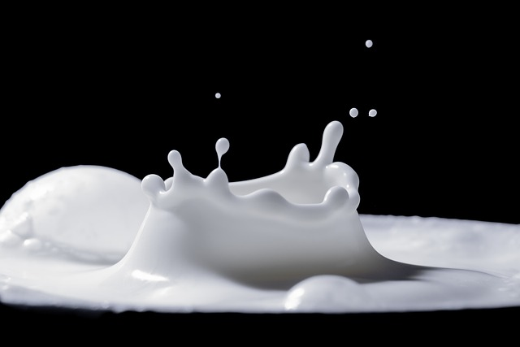

Milk is a nutrient-rich liquid produced by mammals, most commonly from cows, and is widely consumed worldwide. Here is some
information about milk, including its protein content and different ways to consume it:
1. Protein content: Milk is a good source of protein, containing two main types: casein and whey protein. The protein content in milk can
vary depending on the type and fat content. On average, one cup (244 grams) of cow's milk contains about 8 grams of protein. Milk from other
animals, such as goats or sheep, may have slightly different protein compositions.
2. Nutritional profile: In addition to protein, milk is a rich source of other essential nutrients. It provides calcium, phosphorus, vitamin
D, vitamin B12, riboflavin, and potassium. Milk also contains carbohydrates (in the form of lactose), healthy fats, and various vitamins and
minerals that support overall health.
3. Drinking milk: Milk can be consumed in several ways:
- Cold milk: Drinking a glass of cold milk on its own is a common way to enjoy it. You can drink it plain or choose flavored milk options,
such as chocolate or strawberry milk.
- Warm milk: Some people prefer warm milk, especially before bedtime, as it is often associated with relaxation. Warm milk can be enjoyed
plain or with added flavors like honey, cinnamon, or vanilla.
- Milkshakes and smoothies: Milk serves as a base for delicious milkshakes and smoothies. Blend milk with fruits, ice cream, yogurt, or
protein powders to create a nutritious and flavorful beverage.
- Cereal and oatmeal: Milk is commonly poured over cereals like cornflakes, muesli, or granola, adding flavor and texture. It can also be
used as a liquid when preparing oatmeal or other hot cereals.
- Coffee and tea: Milk is often added to coffee or tea to lighten the flavor and provide creaminess. You can choose from different types
of milk, including whole milk, low-fat milk, or plant-based alternatives like almond milk or soy milk.
- Cooking and baking: Milk is a versatile ingredient used in various recipes, such as soups, sauces, desserts, and baked goods. It can
contribute to the texture and flavor of dishes.
It's important to note that individual dietary needs and preferences may vary. If you have any specific concerns or dietary restrictions,
it's advisable to consult with a healthcare professional or registered dietitian for personalized guidance on incorporating milk into your
diet.